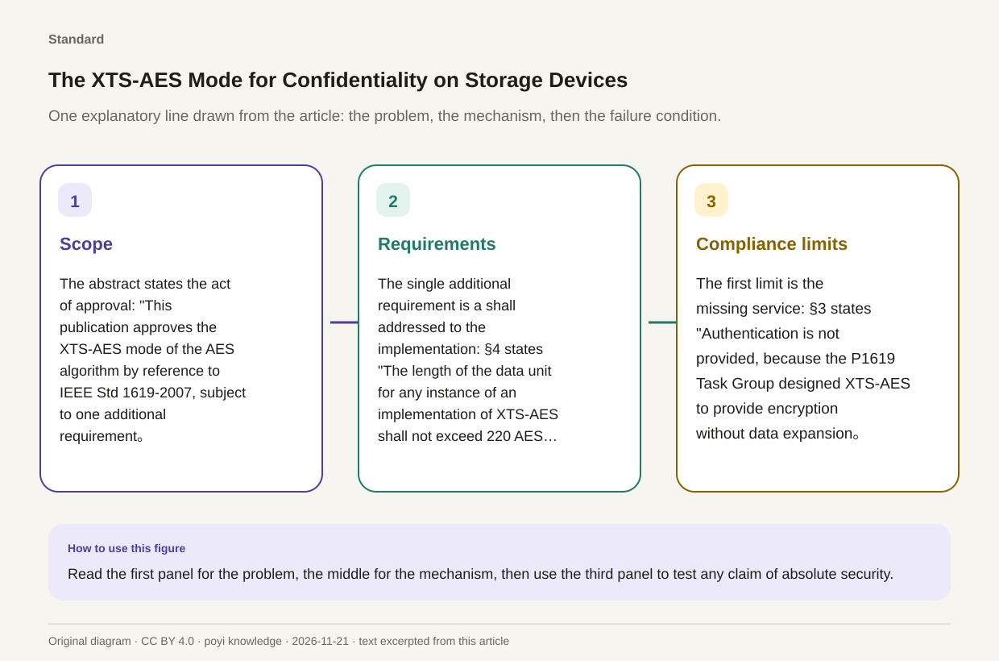
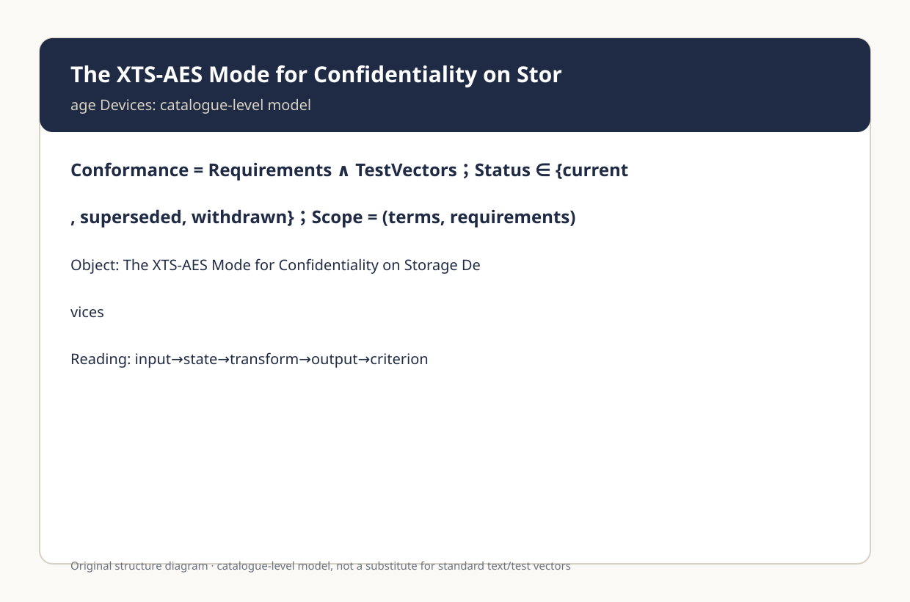

Principles
Standard: The XTS-AES Mode for Confidentiality on Storage Devices (XTS 存储加密模式). The abstract states the act of approval: "This publication approves the XTS-AES mode of the AES algorithm by reference to IEEE Std 1619-2007, subject to one additional requirement, as an option for protecting the confidentiality of data on storage devices." The next sentence subtracts a service: "The mode does not provide authentication of the data or its source." Clause 1 places the part in the series: "This publication is the fifth Part in a series of Recommendations regarding modes of operation of symmetric key block ciphers." The algorithm steps are not restated here; the subject is one additional requirement placed on top of an external standard, plus the scope in which the mode is approved.

Why it matters
The object comes from another standard body: §3 records "The Security in Storage Working Group (SISWG) of the P1619 Task Group of the Institute of Electrical and Electronics Engineers, Inc (IEEE) developed and specified XTS-AES in IEEE Std. 1619-2007 [2]." What this Recommendation adds is incorporation into an approved list with the setting fixed: "The XTS-AES mode was designed for the cryptographic protection of data on storage devices that use of fixed length “data units,” as defined in Ref. [2]." The design is traced outward: "The XTS-AES mode is an instantiation of Rogaway’s XEX (XOR Encrypt XOR) tweakable block cipher". The document presents itself as approving an external standard and stating that the mode was built for stored data rather than for encryption in general.
Applications
The single additional requirement is a shall addressed to the implementation: §4 states "The length of the data unit for any instance of an implementation of XTS-AES shall not exceed 220 AES blocks." (this 220 is likewise 2 to the power 20 with the superscript lost in extraction) and immediately marks the difference in obligation level: "Note that Subclause 5.1 of Ref.[2] recommends this limit but does not require it." Conformance is then defined conditionally: "An implementation of the XTS-AES encryption mode may claim conformance with this Recommendation if every supported instance satisfies this length requirement for a data unit, in addition to all of the requirements in Clauses 1-6 of Ref. [2]." The validation route is in the same section: "Conformance testing for implementations of XTS-AES is conducted within the framework of the Cryptographic Module Validation Program (CMVP), a joint effort of NIST and the Communications Security Establishment Canada." The four sentences mark the weight of this document: the algorithm steps stay inside the external standard, NIST adds one ceiling on the data-unit length, a conformance claim requires that ceiling together with Clauses 1-6 of the external standard, and testing runs through the CMVP.

Limits & attacks
The first limit is the missing service: §3 states "Authentication is not provided, because the P1619 Task Group designed XTS-AES to provide encryption without data expansion, so alternative cryptographic methods that incorporate an authentication tag are precluded." The second is the setting: "The XTS-AES mode was not designed for other purposes, such as the encryption of data in transit." The third leaves placement to the implementation: "Subclause 5.1 of [2] indicates that an implementation of XTS-AES should include a mapping between the pairs of indices that define the blocks (and possibly a single partial block) of a data unit and their physical location in the storage device, but that the mapping itself is outside the scope of the standard." And §2 makes application to national security systems conditional: "but such standards and guidelines shall not apply to national security systems without the express approval of appropriate federal officials exercising policy authority over such systems." Read together: no authentication, no use in transit, block placement left to the implementation and the external standard, and express approval required before the guidance reaches national security systems.
History
The running head gives number and date, "NIST Special Publication 800-38E January, 2010"; the title block is dated January 2010 with Morris Dworkin as author, and the citation line reads "Natl. Inst. Stand. Technol. Spec. Publ. 800-38E, 9 pages (January 2010) CODEN: NSPUE2"; this copy contains no DOI line. The acknowledgements name the external working group and the reviewers: "The author wishes to thank Matt Ball, the Chair of the Security in Storage Working Group of the IEEE P1619 Task Group, as well as the author’s colleagues who reviewed drafts of this publication and contributed to its development, especially Elaine Barker, Lily Chen, John Kelsey, Tim Polk, Bill Burr, and Sharon Keller." The bibliography in Appendix A dates the referenced standard itself: "IEEE Std 1619-2007, The XTS-AES Tweakable Block Cipher, Institute of Electrical and Electronics Engineers, Inc., Apr. 18, 2008." So the 2007-numbered standard appeared in April 2008, and this Recommendation approved the mode by reference to it in January 2010.
Worked example & verification
Formal model and reproduction steps
[S=\min_i S_i,\quad S_i\in{\text{密钥强度},\text{分组安全},\text{实现安全}}]
The XTS-AES Mode for Confidentiality on Storage Devices: the registered public parameters, key material or randomness, and message are mapped through the stated transformation to an output checked against the registered criterion. The worked example is a structural reproduction, not a new test vector; parameter ranges, standard versions and implementation details remain source-bound.
References
- Wikipedia search entry for XTS 存储加密模式. https://zh.wikipedia.org/w/index.php?search=XTS%20%E5%AD%98%E5%82%A8%E5%8A%A0%E5%AF%86%E6%A8%A1%E5%BC%8F
- Handbook of Applied Cryptography (Menezes, van Oorschot, Vanstone). https://www.cacr.math.uwaterloo.ca/hac/